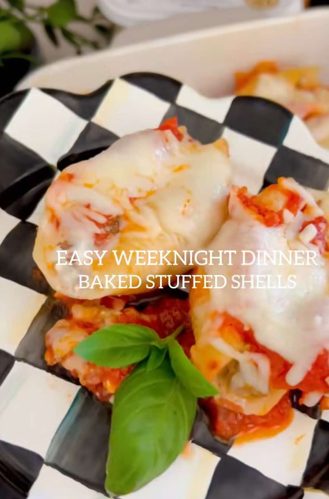

Baked Stuffed Shells
PrepPT0S
CookPT30M

Ingredients
- 1 box jumbo pasta shells
- 1 lb ground beef or Italian sausage
- 1 1/2 cups Lifeway Farmer Cheese
- 1 egg
- 1 cup shredded mozzarella
- 1/2 cup grated parmesan
- 1/2 tsp garlic powder
- 1/2 tsp Italian seasoning
- 2 cups marinara sauce
- Salt + pepper, to taste
- Fresh basil, for garnish
Directions
- Preheat oven to 375°F.
- Cook pasta shells until al dente.
- Drain and set aside.
- In a skillet over medium heat, cook the ground meat until browned.
- Season with salt, pepper, and a pinch of Italian seasoning.
- In a large bowl, mix together the farmer cheese, egg, mozzarella, parmesan, garlic powder, and cooked meat.
- Spread a layer of marinara sauce on the bottom of a 9x13" baking dish.
- Fill each shell with cheese and meat mixture, then place in the baking dish.
- Top with remaining marinara sauce & sprinkle of mozzarella.
- Bake uncovered for 25-30 mins.
- Garnish with fresh basil and serve warm.
This page includes Schema.org Recipe structured data for recipe importers.